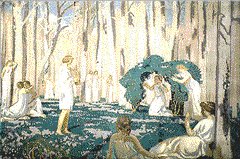

<!--This file created 10/16/97 5:50 PM by Claris Home Page version 2.0-->
<HTML>
<HEAD>
   <TITLE>Mpls Inst Arts - World Mythology: Orpheus and
   Eurydice</TITLE>
   <META NAME="GENERATOR" CONTENT="Claris Home Page 2.0">
   <X-SAS-WINDOW TOP="87" BOTTOM="428" LEFT="96" RIGHT="626">
<HEAD>
</HEAD>
<BODY TEXT="#111111" LINK="#660000" ALINK="#AA0000" VLINK="#444444" BACKGROUND="backgroundbrown.gif">

<P><FONT SIZE="+2">Curriculum Materials: World Mythology</FONT>
<HR>
<!--------Top Myth Menu------><TABLE BORDER="3">
   <TR>
      <TD>
         <P><CENTER><A HREF="introduction.html#top">Introduction</A>
         ~ <A HREF="mythbyimage.html#top">Myth by Image</A> ~
         <A HREF="culturelist.html#top">Myth by Culture</A> ~
         <A HREF="myths.html#top">Mythological Comparisons</A> ~
         <A HREF="glossary.html#top">Glossary</A> ~
         <A HREF="suggestedreading.html#top">Suggested Readings</A> ~
         <A HREF="downloadables.html#top">Downloadable Resources</A>
         ~ <A HREF="../tta/classroom_materials_order.html">How to Order</A> ~
         <A HREF="myth_evaluation.html#top">Your Comments Wanted</A>
         ~ <A HREF="#Story">Story</A> ~
         <A HREF="#Background">Background</A> ~
         <A HREF="#Questions">Questions</A></CENTER>
      </TD></TR>
</TABLE>
<HR>
<A NAME="top"></A>&nbsp;<TABLE BORDER="0" CELLSPACING="10" WIDTH="445">
   <TR>
      <TD>
         <P><A HREF="full_jpg/11.jpg"></A><BR>
         
         <B>Image 11</B><BR>
         
         <B><I>Orpheus and Eurydice</I></B><BR>
         
         Maurice Denis<BR>
         
         France, 1870-1943<BR>
         
         1910<BR>
         
         Oil on linen<BR>
         
         45 7/16 x 65 3/16 inches<BR>
         
         The Putnam Dana McMillan Fund 68.1<BR CLEAR="left">
         
         
         <HR>
         <A NAME="Key"></A></P>
         
         <P><CENTER><B>Key Ideas</B></CENTER></P>
         
         <UL>
            <LI>The Greco-Roman story of Orpheus (ORR-fee-us) tells
            of the power of poetry and music to enchant all natural
            things.
            
            <LI>Orpheus and his mythology appealed to the
            <A HREF="glossary.html#SYMBOLIST">SYMBOLIST</A> artists
            who sought an ideal synthesis of music, poetry, and the
            visual arts.
            
            <LI>The colors, lines, and forms in Maurice (more-EES)
            Denis's (day-NEE) painting of Orpheus and Eurydice
            (you-RID-uh-see) convey a sense of rhythm and harmony.
         </UL>
         
         <P>
         <HR>
         <A NAME="Story"></A></P>
         
         <P><CENTER><B>Story</B></CENTER></P>
         
         <P>Orpheus was the son of the god Apollo and Calliope
         (kuh-LIE-uh-pee), the muse of epic poetry. Orpheus became a
         great musician. His voice was more melodious than any other
         mortal's. The songs he sang and the tunes he played on his
         lyre enchanted gods, mortals, and beasts alike; even stones
         and trees came to him when he played.<BR>
         
         <BR>
         
         Orpheus married the beautiful nymph Eurydice. But on their
         wedding day a poisonous snake bit her and she died.
         Desperate to be reunited with his beloved Eurydice, Orpheus
         journeyed to the Underworld to beg the king and queen there
         to return Eurydice to him. As he sang his plea and played
         his lyre, even the cold spirits of the Underworld wept. The
         king and queen granted the couple permission to leave
         together on the condition that Orpheus must not look back at
         Eurydice until they were both completely out of the
         Underworld. Silently they made the arduous, dark climb. But
         at the opening to the world, Orpheus, in his love for
         Eurydice, turned and looked at her. She slipped back into
         the darkness.<BR>
         
         <BR>
         
         Orpheus returned to his world, where his music became even
         more moving, reflecting his suffering over the loss of
         Eurydice. He wandered despondent through the woods and
         refused the love of other women. This so angered the local
         women that they tore Orpheus to pieces and tossed his head
         and lyre into the river. Still singing out the name of
         Eurydice, his head floated out to sea. Orpheus's spirit
         returned to the Underworld, where he was happily reunited
         with Eurydice.<BR>
         
         <BR>
         
         
         <HR>
         <A NAME="Background"></A></P>
         
         <P><CENTER><B>Background</B></CENTER></P>
         
         <P><B>Orpheus</B><BR>
         
         Although many well-known ancient writers wrote about
         Orpheus, his history is muddled. By the 5th century B.C.,
         the Greeks considered Orpheus the founder of an early
         religion and a religious teacher. His mythology and fame as
         a singer derived from sacred texts ascribed to him.<BR>
         
         <BR>
         
         The Orpheus myth warns that death is inevitable, that even
         the power of song cannot save one from death. But it also
         reconciles life and death, suggesting that death is actually
         the beginning of a new life.<BR>
         
         <BR>
         
         Since ancient times, Orpheus has represented the supreme
         power of poetry and music to enchant all natural things. It
         was Orpheus the musician who attracted the painter Maurice
         Denis.<BR>
         
         <BR>
         
         <B>Maurice Denis and the Symbolists</B><BR>
         
         Early in his career, Denis associated with a group of
         artists called Symbolists. The Symbolists challenged the
         value of naturalism as an artistic goal. Instead, they used
         bright and often arbitrary colors, curving lines, flat
         forms, and unusual compositions to transform the real world
         into personal symbolic statements.<BR>
         
         <BR>
         
         The Symbolists sought an ideal synthesis of the arts.
         Maurice Denis's paintings incorporated elements and themes
         from the other arts; he believed, for example, that painting
         could have musical qualities and that color, line, and form
         were inherently musical and could convey a sense of rhythm
         and harmony. Denis collaborated with writers, poets,
         composers, performers, and critics. Among Denis's many
         interdisciplinary projects was a 1912-13 series of paintings
         on the history of music, including an image of Orpheus, in
         the Theatre des Champs-Elysees (tay-AH-truh day
         SHANZ-ay-leez-ay) in Paris.<BR>
         
         <BR>
         
         Orpheus and his mythology represented the vital synthesis of
         poetry, music, and the other arts, so important to Denis and
         his Symbolist colleagues. Orpheus's reputation as a
         religious and artistic teacher also endeared him to artists
         of this era who, like Denis, were interested in the
         spiritual qualities of art.<BR>
         
         <BR>
         
         Orpheus and In the painting Orpheus and Eurydice Denis uses
         rich and pale Eurydice greens, purples, browns, whites, and
         blues to evoke an idyllic moment of humans in harmony with
         nature. It is a beautiful spring day with a bright blue sky,
         fluffy white clouds, and a blanket of lush green and
         lavender flowers. No single figure dominates. Even Orpheus
         does not take center stage; rather, he stands to the right,
         playing his lyre and charming all who have gathered to hear
         him. He wears a laurel crown, a cherished prize in ancient
         Greece, awarded to the best poets and musicians.<BR>
         
         <BR>
         
         Denis believed that a truly harmonious painting was one that
         achieved a balance between nature and imagination. Artists
         had to be able to rationally organize their emotional
         responses to nature in their art. He achieves that balance
         in this painting. Orpheus's white-clad audience, from the
         frontmost reclining woman to the embracing couple on the
         right, forms an open-ended circle around the musician. By
         gradually reducing the size of the figures, Denis guides the
         viewer back into the forest. Kneeling beneath an arched
         bower in the painting's
         <A HREF="glossary.html#MIDDLEGROUND">MIDDLEGROUND</A>,
         Eurydice raises her hands in approval of Orpheus's song. The
         sequence of figures creates a gentle rhythm that carries
         through the picture. The vertical trees impose a subtle
         restraint on the scene, though even they, like the standing
         Orpheus, curve gently, contributing to the overall
         harmony.<BR>
         
         <BR>
         
         Denis's harmonious painting only hints at the tragedy that
         would befall the lovers. By isolating Eurydice under the
         hedge, he physically separates her from all of the other
         figures.</UL>
         <HR>
         </P>
         
         <P><CENTER><B><A NAME="Questions"></A>Discussion
         Questions</B></CENTER></P>
         
         <P><B>Look</CENTER></B><BR>
         
         <B>1.</B> Tell the story of Orpheus and Eurydice. Where is
         Orpheus in this painting?
         <B>(<A HREF="glossary.html#MIDDLEGROUND">MIDDLEGROUND</A>,
         just right of center.)</B> How do you know? <B>(He's playing
         a musical instrument called a lyre.)</B> Where is Eurydice
         in this painting? <B>(Middleground, left of center, kneeling
         under an arched hedge.)</B> How do you know? <B>(She is
         separated from others by a green arch.)</B> Does Denis give
         us any clues about what will happen to these lovers?
         <B>(Eurydice appears under green foliage while all other
         figures lounge on top of the green lawn, suggesting perhaps
         her Underworld fate.)</B><BR>
         
         <BR>
         
         <B>2.</B> What kind of lines do you see in this painting?
         <B>(Curved.)</B> Describe the curved lines: Are they sharp?
         Hairpin? Gentle? Wavy? Flowing? Long? Short? Continuous?<BR>
         
         <BR>
         
         <B>3.</B> What colors did Denis use in this painting? Name
         them. <B>(White, green, purple, brown, and blue.)</B> What
         do green, purple, and blue have in common? <B>(They all
         contain the color blue!)</B> Rather than use colors as they
         would appear in nature, Denis used colors as
         <A HREF="glossary.html" L>SYMBOLS</A> to create a
         personal statement. What kind of a statement do you think
         Denis was making when he painted Orpheus and Eurydice? Loud?
         Quiet? Happy? Angry? Excited? Calm?<BR>
         
         <BR>
         
         <B>4.</B> Beginning with the two reclining women in the
         <A HREF="glossary.html#FOREGROUND">FOREGROUND</A>, follow
         with your eyes the ring of figures surrounding Orpheus. Is
         there an open spot for you to join this group? Where?
         <B>(Right lower corner.)</B><BR>
         
         <BR>
         
         <B>5.</B> The
         <A HREF="glossary.html#FOREGROUND">FOREGROUND</A> in a
         painting is the space closest to the viewer, the
         <A HREF="glossary.html#MIDDLEGROUND">MIDDLEGROUND</A> is the
         space below the horizon line, and the
         <A HREF="glossary.html#BACKGROUND">BACKGROUND</A> is very
         near the horizon line and/or above it. What do you see in
         the foreground of this painting? <B>(Two reclining female
         figures.)</B> What do you see in the middleground? <B>(Green
         lawn, more figures.)</B> What do you see in the background?
         <B>(Figures and trees.)</B> What common elements unite the
         foreground, middleground, and background in this painting by
         appearing in all three places? <B>(Figures, curved lines,
         and color.)</B><BR>
         
         <BR>
         
         
         <HR>
         <BR>
         
         <B>Think</B><BR>
         
         <B>1.</B> Maurice Denis was associated with a group of
         artists called the
         <A HREF="glossary.html#SYMBOLIST">SYMBOLISTS</A>. The
         Symbolists sought an ideal synthesis of all the arts -
         visual arts, music, poetry, theater. Why do you think Denis
         would be interested in the story of Orpheus and Eurydice?
         <B>(Orpheus represents the supreme power of music and poetry
         to enchant all natural things.)</B><BR>
         
         <BR>
         
         <B>2.</B> Denis believed that color, line, and form had
         musical qualities and could convey a sense of rhythm and
         harmony. He used these principles when he painted Orpheus
         and Eurydice. What kind of music do you suppose inspired
         Denis when he made this painting? Jazz? Operatic? Polka?
         Classical? Explain your answer. How would you represent your
         favorite music?<BR>
         
         <BR>
         
         <B>3.</B> Denis believed that a truly harmonious painting
         was one that achieved a balance between nature and the
         imagination. What would Denis's painting look like if he had
         believed that nature is more important than imagination?
         What would it look like if imagination had played a more
         important role?<BR>
         
         
         <HR>
      
      </TD></TR>
</TABLE> <TABLE BORDER="3">
   <TR>
      <TD>
         <P><CENTER><A HREF="introduction.html#top">Introduction</A>
         ~ <A HREF="mythbyimage.html#top">Myth by Image</A> ~
         <A HREF="culturelist.html#top">Myth by Culture</A> ~
         <A HREF="myths.html#top">Mythological Comparisons</A> ~
         <A HREF="glossary.html#top">Glossary</A> ~
         <A HREF="suggestedreading.html#top">Suggested Readings</A> ~
         <A HREF="downloadables.html#top">Downloadable Resources</A>
         ~ <A HREF="../tta/classroom_materials_order.html">How to Order</A> ~
         <A HREF="myth_evaluation.html#top">Your Comments Wanted</A>
         ~ <A HREF="#Story">Story</A> ~
         <A HREF="#Background">Background</A> ~
         <A HREF="#Questions">Questions</A></CENTER>
      </TD></TR>
</TABLE></P>
</BODY>
</HTML>
